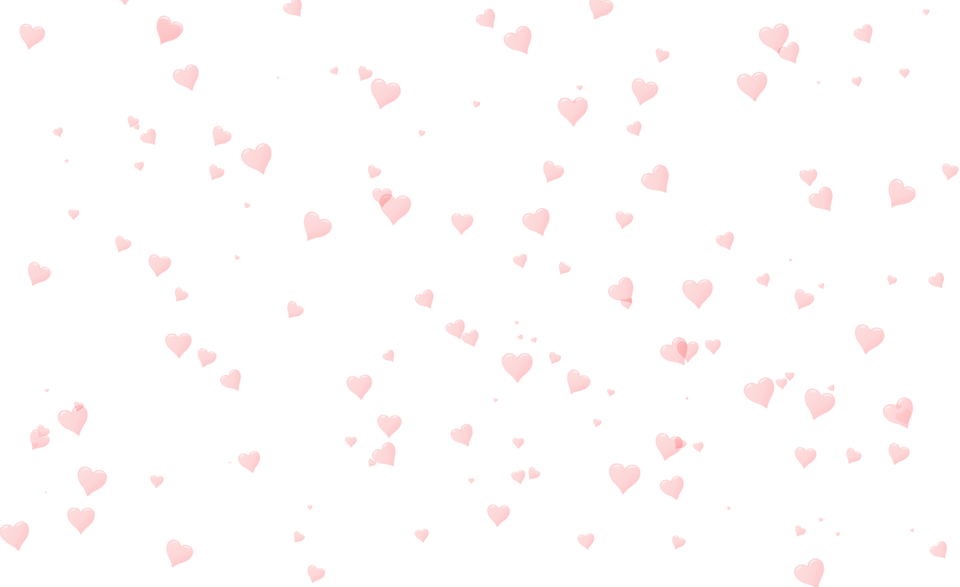

Sobre mi

Mi nombre es Magali Castillo Flores y cuento con una sólida formación integral, para proponer, analizar, diseñar, desarrollar, implementar, gestionar y administrar sistemas computacionales usando tecnologías de cómputo de vanguardia y aplicando metodologías, normas y estándares nacionales e internacionales de calidad para crear, mejorar y sistematizar procesos administrativos e industriales.
Por lo que tengo la capacidad de desempeñarme en los sectores privado, público y de investigación, e integrar y administrar equipos de trabajo inter y multidisciplinarios, con actitud de liderazgo, ética y responsabilidad. Actualizándome permanentemente para responder a las necesidades de la sociedad y al desarrollo sustentable.
Además desarrollo otras habilidades como la creación y diseño de páginas web utilizando las últimas tecnologías para la realización de estos trabajos, páginas que podrás tener el control para administrar tu página y brindando la seguridad que esta requieren.
Servicios
Diseño Web
Páginas web que además de ser funcionales pueden tener diseños personales, manejo de bases de datos y algo fundamental para brindarle un buen servicio, la seguridad no solo de la información que la página web contenga, sino también de la calidad del trabajo que se está realizando.
Programación competitiva
Escribo código fuente de computadora capaz de solucionar un problema dado. La mayoría de los problemas que resuelvo en estas competencias son matemáticos o lógicos. Generalmente pertenecen a categoríasteoría como grafos, geometría, análisis de cadenas y estructuras de datos.
Programción orientada a objetos
Utilizo un método de implementación en el que los programas se organizan como colecciones cooperativas de objetos, cada uno de los cuales representa una instancia de alguna clase, lo cual ayuda a implementar e innovar la forma de obtener resultados.
Electrónica analógica
Diseño circuitos electrónicos elementales a partir de los conceptos fundamentales y de operación de los dispositivos electrónicos básicos para aplicarlos como circuitos acondicionadores de señales analógicas.
Diseño digital
Tengo la cacidad de diseñar y crear circuitos lógicos utilizando algebra de boole y sistemas de numeros binarios utilizando las últimas tecnologías para realizar un buen trabajo utilizando VHDL como lenguaje principal para crear el sistema que se requiera.
Bases de datos
También si necesitas puedo implementar una base de datos relacional, por medio de modelos de patos para cualquier sistema de información que requieras, con la ayuda de herramiendas que Oracle brinda como MySQL.
Mis Trabajos
Fotoresistencias
Transistores canal P
2
3
4
5
6
7
8
9
10
11
12
¿Por que trabajar conmigo?

- Velocidad
- La velocidad de cualquier sistema, ciercuito o página web es indispensable, por lo que me comprometo a brindarte velocidad y eficiencia para cualquier trabajo que se requiera.
- Mantenimiento
- Cualquiera de los sistemas que desees que realice siempre van a estar monitorados y trabajando correctamente ya que todos los trabajos estarán en constante mantenimiento para brindar un servivio de calidad.
- Seguridad
- Todos los sistemas, circuitos o páginas web que se vayan a implementar siempre se trabajaran con la seguridad que se requiera cada unidad, con el beneficio de que puedas administrarlo tu mismo.